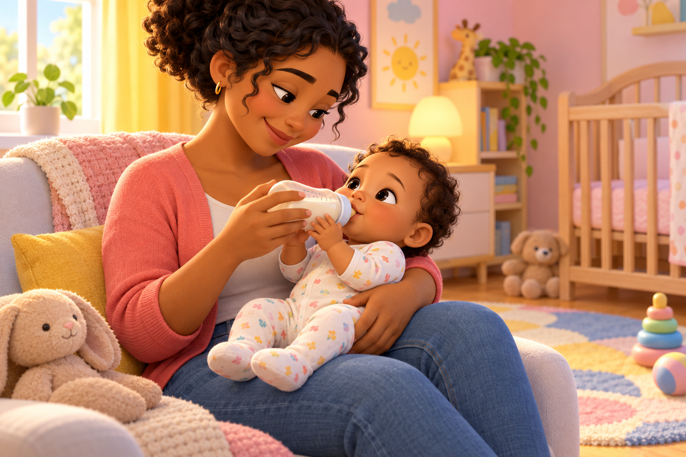

Eu também posso participar!
Na alimentação, na troca de roupa e nos momentos de cuidado, o bebê também pode participar. Pequenos gestos mostram suas iniciativas e necessidades.

Ilustração para o conteúdo.
💗 Eu participo quando cuidam de mim!
Abra cada situação para conhecer pequenas formas de participação nos cuidados diários.
Participar da alimentação
Se a família já utiliza mamadeira, o bebê pode colocar as mãos nela enquanto o adulto continua segurando a mamadeira e o bebê, em posição semissentada. Esse contato é participação, não um convite para mamar sozinho. Nunca apoie a mamadeira em objetos nem deixe o bebê alimentando-se sozinho.
Participar ao se vestir
Ao vestir uma roupa, converse sobre o que vai acontecer e dê tempo para os movimentos do bebê. Ele pode movimentar o braço ou a perna durante o cuidado. Acolha esses gestos e ajude sem exigir uma resposta.
Mostrar o que precisa
Olhares, sons, gestos e expressões comunicam interesse, desconforto e vontade de fazer uma pausa. Observe os sinais e responda com carinho. Comunicar necessidades também faz parte da participação.
Perceber suas próprias iniciativas
Se o bebê já usa chupeta, pode tentar pegá-la e levá-la à boca. Esse gesto pode ser observado e acolhido, com acompanhamento, sem virar treino ou uma habilidade exigida. Não é necessário introduzir chupeta para desenvolver autonomia.
🌱 Cuidar com a participação do bebê
O bebê não precisa realizar um cuidado inteiro para participar dele. Pode colocar as mãos em um utensílio junto com o adulto, movimentar o corpo ao se vestir ou mostrar que precisa de uma pausa. O adulto percebe e acolhe essas iniciativas.
No CMEI, os momentos de cuidado também são momentos de relação e aprendizagem. A equipe conversa, observa e oferece apoio, mantendo a responsabilidade pela segurança e pelo bem-estar.
🏠 Experimente em casa
Durante uma troca de roupa, conte ao bebê o que você vai fazer e observe seus movimentos. Dê tempo para sua participação e ajude no que for necessário. Não é preciso transformar o cuidado em um treino.
💛 Apoio também faz parte da autonomia
Autonomia não significa fazer tudo sozinho. A criança pode participar, tentar e pedir ajuda. O adulto observa, oferece segurança e ajusta o apoio ao que ela precisa naquele momento.
Respeite o ritmo, os interesses e as formas de participação de cada criança. Pedir ajuda também é uma conquista; dificuldades não devem ser motivo de comparação ou cobrança.
💛 Alimentação e cuidado a partir dos seis meses
O Ministério da Saúde recomenda oferecer somente leite materno nos primeiros seis meses. A partir dos seis meses, começa a alimentação complementar, com alimentos adequados à idade, inicialmente amassados, mantendo a amamentação até os dois anos ou mais.
No CMEI João Paulo II, que atende crianças a partir dos seis meses, os momentos de alimentação fazem parte da rotina de cuidado e aprendizagem. As crianças recebem refeições adequadas à faixa etária, e algumas também utilizam mamadeira, conforme sua rotina e as orientações de alimentação.
A mamadeira não é uma etapa obrigatória da introdução alimentar. Quando utilizada, o adulto continua segurando o bebê e a mamadeira e acompanhando toda a alimentação. As pequenas participações são acolhidas sem apressar o desenvolvimento nem substituir os cuidados necessários.
📚 Referências para o tema
BRASIL. Ministério da Educação. Base Nacional Comum Curricular. Brasília, 2017. Consultar.
BRASIL. Ministério da Educação. Diretrizes Curriculares Nacionais para a Educação Infantil. Brasília: MEC/SEB, 2010. Consultar.
VIGOTSKI, L. S. A formação social da mente: o desenvolvimento dos processos psicológicos superiores. 7. ed. São Paulo: Martins Fontes, 2007. Contribuição teórica: aprendizagem nas relações sociais e colaboração entre crianças e adultos.
MINISTÉRIO DA SAÚDE. Amamentação e orientações sobre mamadeiras e chupetas.
NHS. Bottle feeding advice — acompanhamento durante a alimentação.
Os exemplos desta página são propostas pedagógicas, não uma lista de habilidades obrigatórias para cada idade.